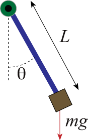

Adjoint Systems for Optimal Control from Pontryagin to Wikipedia
Exemplified by the Single Pendulum
While it seems common knowledge how to formulate necessary optimality conditions backed by the famous Pontryagin’s Maximum Principle, the direct derivation from the very general original formulations is not obvious. Sometimes, authors like me1 provide some plausibility like obviously this term has to vanish, refer to other sources that miss the derivation too, or attach the complete book by Pontryagin to a specific formula2.
Table of Contents
The Model
A Unit Pendulum
Consider the pendulum subjected to a potential force that can be adjusted. That is, instead of the gravity
$$ G:= \begin{bmatrix} 0\\ -9.81 \end{bmatrix}, $$
we consider a force field
$$ G:= \begin{bmatrix} g_1 \\ g_2 \end{bmatrix}, $$
with scalar functions $g_1$, $g_2$ of time that can act as a control.
With mass $m$, length $L$, and angle $\theta$ (see the picture below), we define the momentum as
$$ p = mL^2\dot \theta. $$
This gives the Hamiltonian $$ H(\theta, p) = \frac{p^2}{2mL^2} + m \begin{bmatrix} g_1 &g_2 \end{bmatrix} \begin{bmatrix} L \sin \theta \\ -L \cos \theta \end{bmatrix}, $$
or $$ H(\theta, p)= \frac{p^2}{2mL^2} + mg_1 L \sin \theta - mg_2 \cos \theta , $$
and the equations of motion as
$ \begin{aligned} \quad \quad \quad \dot \theta &= \frac{p}{mL^2}, \\\\ \dot p &= -mg_1L\cos \theta - mg_2L\sin \theta. \end{aligned} $
Here is a schematic illustration taken from scholarpedia:

Control Setups
With consider two control setups:
Final State Fixed
Fix a time $t_1$, start with
$\quad(\theta(t_0), p(t_0))=(\pi, 0)$,
i.e. pendulum standing up-side-down, and minimize the control effort
$ \quad \mathcal J:= \frac{1}{2}\int_{t_0}^{t_1} g_1^2 + g_2^2 ~ dt \to \min $
over all $(g_1, g_2)$ that lead to
$\quad(\theta(t_1), p(t_1))=(0,0)$,
i.e. pendulum hanging down.
Final State as Optimization Target
Fix a time $t_1$, start with
$\quad(\theta(t_0), p(t_0))=(\pi, 0)$,
i.e. pendulum standing up-side-down, and find a control that targets
$\quad (\theta(t_1), p(t_1))=(0,0)$,
i.e. pendulum hanging down while also minimizing the control effort:
$ \quad \mathcal J:= \frac{1}{2}(\theta(t_1)^2 + p(t_1)^2) + \frac{1}{2}\int_{t_0}^{t_1} g_1^2 + g_2^2 ~ dt \to \min $.
The Maximum Principle
Classically, as treated by Pontryagin itself3, one seeks the minimum over all $u=(g_1, g_2)$ that a-priori ensure that $\theta(t_1)=0$ and $p(t_1)=0$. This, in a sense, means that suitable controls are known and that the optimization looks for those with the least magnitude. For people like me, that use optimization because they don’t know a control, this seems not very feasible. But Pontryagin has the answer for that too:
Maximum Principle with Variable Endpoints
One can (partially) abandon the end conditions, see Chapter I.7 in Pontryagin’s book. Similarly, one can abandon the initial conditions which, again, seems odd from an application point of view. Also, simply omitting the end conditions will lead to trivial solutions. Certainly, we need to include them in the optimization. Which leads to the Wikipedia case.
The Wikipedia Case
Commonly used and illustrated on wikipedia:Pontryagin’s maximum principle – the form that leaves the controls free but penalizes the endpoint. Now, let me show how this form derives from Pontryagin’s book.
Connecting Wikipedia and Pontryagin
The derivation of the Wikipedia formulas from the Maximum Principle with Variable Endpoints goes as follows:
-
Transform (see, e.g., Enc. of Math.: Bolza problem) the problem from Mayer form to Lagrange form.
-
Put the resulting system into the form of Pontryagin.
-
Apply the maximum principle with completely free endpoints.
For the pendulum optimal control problem
$$\frac{1}{2}(\theta(t_1)^2 + p(t_1)^2) +\frac{1}{2}\int_{t_0}^{t_1} g_1^2 + g_2^2 ;dt \to \min$$
subject to
$$ \begin{aligned} \dot \theta &= \frac{p}{mL^2},\\\\ \dot p &= -mg_1L\cos \theta - mg_2L\sin \theta. \end{aligned} $$
with initial conditions
$$ \theta(t_0)=\pi, \quad p(t_0)=0 $$
this means:
I. Lagrange form
We get rid of the costs that are put on the terminal values by introducing a variable $\tilde x$. Thus the optimal control problem no reads:
$$ \mathcal J:=\int_{t_0}^{t_1} \tilde x + \frac{1}{2}(g_1^2+g_2^2) ;dt \to \min $$
subject to
$$ \begin{aligned} \dot {\tilde x} &= 0, \\\\ \dot \theta &= \frac{p}{mL^2},\\\\ \dot p &= -mg_1L\cos \theta - mg_2L\sin \theta. \end{aligned} $$
with one end condition
$$ \tilde x(t_1) = \frac{1}{2(t_1-t_0)}(\theta(t_1)^2+p(t_1)^2), $$
and the old initial conditions
$$ \theta(t_0)=\pi, \quad p(t_0)=0. $$
In fact, since $\tilde x$ is constant and fixed by its end condition, one obtains that
$\int_{t_0}^{t_1} \tilde x ;dt = (t_1 - t_0)\tilde x(t_1) = \frac{1}{2}(\theta(t_1)^2+p(t_1)^2).$
Once in Lagrange form, the problem can be put into the form used in Pontryagin’s theorem:
II. Pontryagin’s terms
$$ x^0(t_1) \to \min $$
subject to
$$ \begin{aligned} \dot x^0 &= \tilde x + \frac{1}{2}(g_1^2+g_2^2), \\\\ \dot {\tilde x} &= 0, \\\\ \dot \theta &= \frac{p}{mL^2},\\\\ \dot p &= -mg_1L\cos \theta - mg_2L\sin \theta. \end{aligned} $$
with initial conditions
\begin{equation} x^0(t_0)=0, \quad \theta(t_0)=\pi, \quad p(t_0)=0, \end{equation}
and the end condition
$$ \tilde x(t_1) = \frac{1}{2(t_1-t_0)}(\theta(t_1)^2+p(t_1)^2). $$
Here, the trick is that the new variable $x^0$ simply integrates the value of the cost functional.
The corresponding adjoint system for the $\psi$ reads4
\begin{align} \dot \psi_0 &= 0, \\\\ \dot \psi_1 &= -\psi_0, \\\\ \dot \psi_2 &= -(mg_1L\sin\theta - mg_2L\cos\theta) \psi_3, \\\\ \dot \psi_3 &= -\frac{1}{mL^2}\psi_2. \end{align}
This $\psi$ defines the control Hamiltonian as
$$ \bigl(\psi, f(x;G) \bigl ) = \bigl(\psi, \begin{bmatrix} \tilde x + \frac{1}{2}(g_1^2+g_2^2) \\\\ 0 \\\\ \frac{p}{mL^2}\\\\ -mg_1L\cos \theta - mg_2L\sin \theta \end{bmatrix} \bigl ) $$
III. Pontryagin with variable endpoints
Finally, we can omit parts of the end conditions.
If we let the state $(\tilde x, \theta, p)$ at $t_1$ take on an arbitrary value then it will belong to the hypersurface
$$ S_1 = {(\frac{1}{2(t_1-t_0)}(\theta^2 + p^2), \theta, p)} \subset \mathbb R^3 $$
Then the transversality condition5 that $\psi(t_1)$ has to be orthogonal to the tangent plane to $S_1$ at $(\tilde x(t_1), \theta(t_1), p(t_1))$ gives the following boundary conditions for $\psi$:
\begin{align} \frac{1}{t_1-t_0}p(t_1)\psi_1(t_1) - \psi_3(t_1) &= 0, \\\\ \frac{1}{t_1-t_0}\theta(t_1)\psi_1(t_1) - \psi_2(t_1) &= 0. \end{align}
These give the Wikipedia terminal condition for the adjoint state with the choice of $\psi_1(t_1) = t_1-t_0$.
Note that these particular end conditions were derived from the particular basis
$$ \biggl\{ \begin{bmatrix} \frac{1}{t_1-t_0}p \\ 0 \\ 1 \end{bmatrix}, \begin{bmatrix} \frac{1}{t_1-t_0}\theta \\ 1 \\ 0 \end{bmatrix} \biggr\} $$
of the tangent space and note that any other basis can be taken, or equivalently, any linear combination of the boundary conditions are feasible.
References
📙 Pontryagin, Boltyanski, Gamkrelidze, and Mishchenko (1962) The Mathematical Theory of Optimal Processes
-
Lemma 6.5 in Heiland (2013) Decoupling, Semi-Discretization, and Optimal Control of Semi-linear Semi-explicit Index-2 Abstract Differential-Algebraic Equations and Application in Optimal Flow Control ↩︎
-
cp. the text before Theorem 3.4 in Ober-Blöbaum, Junge, Marsden (2008) Discrete Mechanics and Optimal Control: an Analysis] ↩︎
-
Ch. I.2 in his book ↩︎
-
Pontryagin et al., Theorem 1 ↩︎
-
Pontryagin et al., Ch. I.7 ↩︎